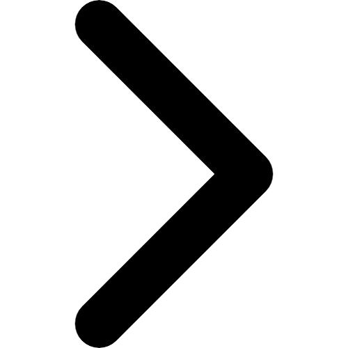

<button class="caurousel-button button previous-button"></button>
<div class="carousel">
  <ng-container *ngFor="let image of images; let i = index">
    
  </ng-container>
</div>
<button class="caurousel-button next-button"></button>
<div class="dotcontainer">
  <span *ngFor="let image of images; let i = index" class="dot"> ● </span>
</div>
